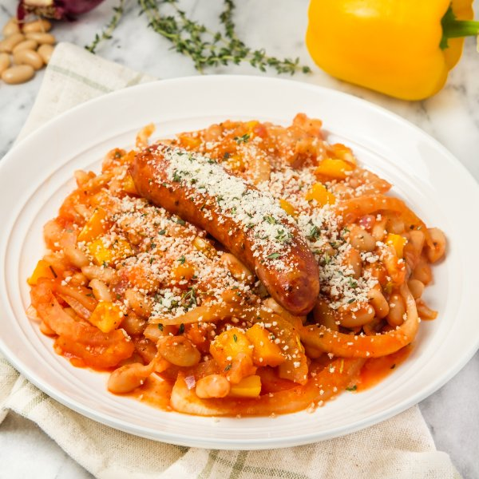

Pork Sausage "Cassoulet" with White Beans, Fennel & Thyme Bread Crumbs

Prep Time
40 min
Nutrition (per serving)
644.5 kcalCalories
33.5 gProtein
57.4 gCarbs
33.1 gFat
Full nutrition table
| Calories | 644.5 kcal |
| Total fat | 33.1 g |
| Saturated fat | 9.5 g |
| Trans fat | 0.1 g |
| Cholesterol | 76.4 mg |
| Sodium | 1090.4 mg |
| Carbohydrates | 57.4 g |
| Fiber | 15.2 g |
| Sugars | 18.4 g |
| Protein | 33.5 g |
| Potassium | 1645.2 mg |
| Calcium | 220 mg |
| Iron | 7.3 mg |
| Vitamin A | 703.5 IU |
| Vitamin C | 145.7 mg |
| Vitamin D | 24.6 IU |
Cookware
Ingredients
- 2 (15 oz) canscannellini (white kidney) beans
- 2fennel bulbs
- 1 small pkgfresh thyme
- 2 clovesgarlic
- 4pork sausages
- 1 mediumred onion
- 2 (8 oz) canstomato sauce
- 2yellow bell peppers
- black pepper
- extra virgin olive oil
- oregano, dried
- panko bread crumbs
- rosemary, dried
- salt
Steps
- Preheat oven to 450°F.
- Wash and dry the fresh produce.2 fennel bulbs
2 yellow bell peppers
1 small pkg fresh thyme - Trim off root end and stalks of the fennel, leaving only the white bulbs. Halve fennel bulbs lengthwise, then slice crosswise into thin half-moons. Place in a medium bowl.
- Trim, seed, and medium dice bell peppers. Add to the bowl with the fennel.
- Peel, halve, and mince onion; peel and mince garlic. Add both to the bowl.1 medium red onion
2 cloves garlic - Preheat a large ovenproof skillet over medium-high heat.
- While the skillet heats up, slide thyme leaves off the stems; discard the stems. Add half to the bowl with the veggies. Mince remaining thyme leaves, place in a small bowl, and set aside for later use.
- Once the skillet is hot, add oil and swirl to coat the bottom. Add veggie-thyme mixture and spices; cook, stirring occasionally, until softened, 4-5 minutes.4 tsp extra virgin olive oil
1 tsp oregano, dried
1 tsp salt
½ tsp black pepper
½ tsp rosemary, dried - Meanwhile, drain and rinse beans.2 (15 oz) cans cannellini (white kidney) beans
- When the veggies are done, add beans, tomato sauce, and water to the skillet. Stir to combine, then nestle sausages into the stew.2 (8 oz) cans tomato sauce
1 cup water
4 pork sausages - Place skillet in the oven and bake, turning sausages and stirring beans halfway through, until sausages are golden and cooked through, 18-20 minutes. Remove from oven.
- Meanwhile, add bread crumbs to the bowl with the minced thyme and stir to combine.½ cup panko bread crumbs
- To serve, divide cassoulet between plates or bowls and top with bread crumbs. Enjoy!